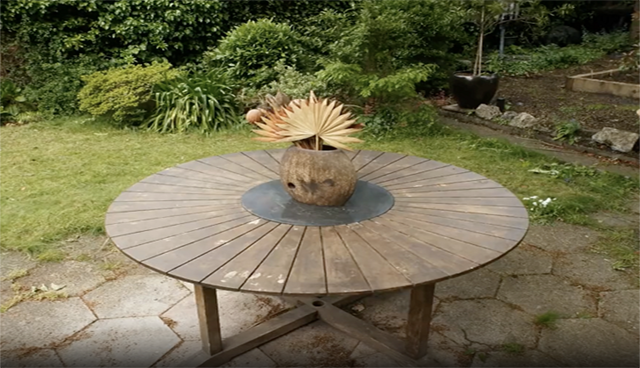

Camera motion refers to the process of altering the position and orientation of a camera in order to achieve diverse visual effects, which holds significant potential for application in the field of video creation. However, existing methods suffer from several limitations. They lack flexible control capabilities, only allowing movement in limited directions. Additionally, their interaction mechanisms are often complex, and they exhibit significant limitations in handling long sequence control tasks. To address these issues, we propose FlexCaM, which leverages large language models and video diffusion models to achieve powerful and versatile functionalities. It supports fine-grained temporal control, enables composite motion in arbitrary directions, facilitates camera zooming, allows for designing camera motion effects, and ensures seamless integration of multiple operations. Additionally, our model supports multimodal inputs, which are divided into trajectory references and content references. Trajectory references are controlled through text or video, while content references are provided via images or video. To support further training of the FlexCaM model, we propose the FlexTr dataset, which contains a large number of high-quality long-sequence trajectories, videos, and corresponding descriptions. Experimental results demonstrate that our model achieves state-of-the-art (SOTA) performance in terms of both functionality and effectiveness.
|
First, the camera moves quickly downward. 1 to 2 seconds, it slowly pans to the right. Immediately after, the camera swiftly moves upward-right at a 30-degree angle. 3 to 4 seconds, it slowly pulls back. |
The camera first moves quickly upward. 3 to 4 seconds, it slowly pans to the left. |
0 to 1 second, the camera steadily moves downward at a fast speed. 1 to 2 seconds, it slowly pans to the left. 2 to 3 seconds, it rapidly pushes forward. |
During the first 2 seconds, the camera slowly rises upward. Then, from 2 to 3 seconds, it quickly pushes downward, highlighting an important detail in the frame. |
||||||||||||
|
From 2 to 3 seconds, the camera gently descends, gradually revealing a lower part of the scene. |
Between 0 and 1 second, the camera gently moves upward-right at about a 45-degree angle. Afterward, it swiftly pulls back, gradually expanding the view. Finally, from 2 to 3 seconds, it continues to gently move forward. |
From 0 to 1.3 seconds, the camera rises steadily, showcasing the distant view. From 1.3 to 2 seconds, it slowly turns to the left. From 2 to 3 seconds, it rapidly slides to the right, transitioning the image. |
From 0 to 1 second, the camera quickly moves forward. Then, it slowly rotates counterclockwise. After that, from 1.5 to 2.5 seconds, the camera quickly slides right and upward at a 45-degree angle. |
|
Input 1 |
Output 1 |
Input 2 |
Output 2 |
||||||||||||
|
From 0 to 1 seconds, the camera rapidly descends. From 1 to 3seconds, the camera slowly moves to the right |
|||||||||||||||
|
Video(Trajectory) |
Image(Content) |
Output |
|||||||||
|
Image(Content) |
Output |
Video(Content) |
Output |
||||||||||||
As the first framework achieving inter-video camera motion transfer, our method ensures strict preservation of source motion characteristics while generating geometrically consistent novel perspectives.
|
Original image |
CogVideoX |
Runway |
Tongyi |
||||||||||||
|
Original image |
CameraCtrl |
MotionMaster |
Hunyuan |
||||||||||||
|  |
|
Generate an image of a small boat sailing on a lake, from 0 to 1.3 seconds, the camera rises to show distant views. From 1.3 to 2.1 seconds, the camera turns slowly to the left. From 2.1 to 2.8 seconds, the camera slides rapidly to the right. |
Generate an indoor image of a panda plush toy, from 0 to 1.3 seconds, the camera rises to show distant views. From 1.3 to 2 seconds, the camera turns swiftly to the left. From 2 to 3 seconds, the camera slides rapidly to the right. |
Generate an indoor image of a potted plant, from 0 to 1.3 seconds, the camera rises to show distant views. From 1.3 to 2 seconds, the camera turns swiftly to the left. From 2 to 3 seconds, the camera slides rapidly to the right. |
Generate an image of a panda, from 0 to 1.3 seconds, the camera rises to show distant views. From 1.3 to 2 seconds, the camera turns swiftly to the left. From 2 to 3 seconds, the camera slides rapidly to the right. |